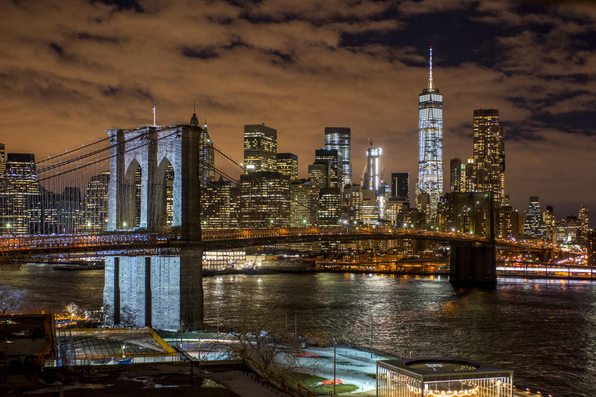

Brooklyn Bridge
The Brooklyn Bridge, an iconic emblem of New York City, spans the East River to connect the boroughs of Manhattan and Brooklyn. Completed in 1883, this historic bridge is a marvel of engineering and a testament to the vision and determination of its creators. It was the world's first steel-wire suspension bridge and, at the time of its completion, the longest suspension bridge in the world, with a main span of 1,595.5 feet.